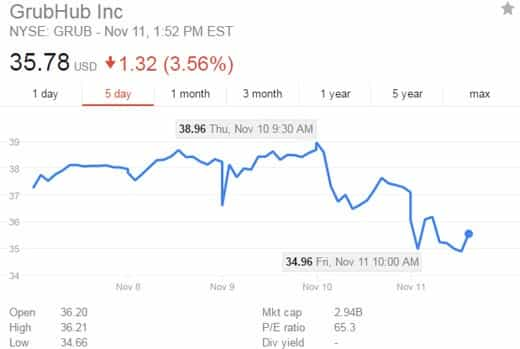
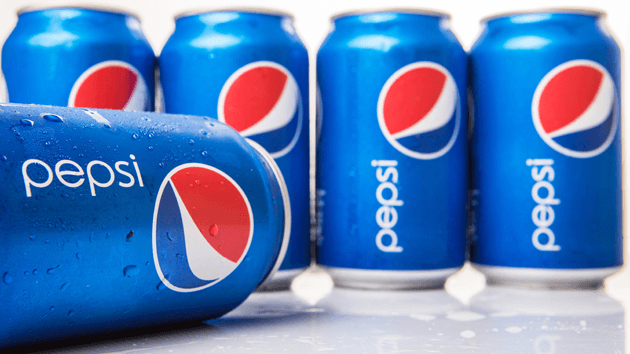

< < < Back
4 Examples That Show The Globalists Are Losing Ground – Return Of Kings
The media is beginning to demonize the manosphere and alt right. Twitter has suspended multiple accounts, such as Milo Yiannopoulos, Ricky Vaughn, and Matt Forney. The Guardian wrote a hit piece against the red pill. The media has called alt-right groups “xenophobic, racist, and misogynist,” despite not pointing to a single piece of evidence.
As anti-Trump rallies continue to rage across the nation, in New York City, Philadelphia, and Michigan, the media completely ignores all of the assaults occurring on Trump voters:
Despite the elites’ attempts to destroy us, we are, in fact, winning this battle. The reasons why are simple:
- Truth is always more powerful than falsehood
- We are too numerous to be effectively silenced
- We don’t congregate on one single platform; we’re a collection of individuals based around an ideology
- We’re high energy, decisive, assertive, and confident men
Below, I would like to offer the supporters of our causes some signs of hope. Victory is near, and Trump is going to lead the way.
1. George Soros Being Sued For $550 Million

According to Breitbart, along with dozens of other alternative news sites, Dallas Police Department Sergeant Demetrick Pennie, President of the Dallas Fallen Officer Foundation, is suing a multitude of individuals for inciting a race war:
- George Soros
- Hillary Clinton
- Jesse Jackson
- Barrack Obama
- The New Black Panthers
- …and more
Some individuals might claim that there’s no way someone can take on this collection of massively powerful and wealthy elites in a single lawsuit, and they may be right. However whether or not this lawsuit is successful, is completely irrelevant.
What matters far more, is that the word is starting to get out there. The President of the Dallas Fallen Officer Foundation, an extremely reputable organization, is taking steps to file a massive lawsuit against these individuals. This will, at the very least, do several things:
- Potentially serve a massive blow to the globalists
- Show the elites that we will not back down
- Generate huge amounts of public awareness
- Show the average gun rights promoting, masculine, traditional American that they have our support.
And best of all? The lawsuit was filed in the United States District Court for the Northern District of Texas, which means that the outcome will generally be good either way.
First of all, there’s a very high likelihood of them winning due to the case being handled in Texas, a highly conservative state. Second, in the event that the case doesn’t win, it will likely be pursued all the way to the Supreme Court. If this occurs, expect truly amazing things to happen. The reason why? The President of the United States is responsible for appointing Supreme Court judges—and guess who’s going to be President in two months?
2. The GrubHub Crash

After Matt Maloney, CEO of the online food delivery service GrubHub, proclaimed in an email that if you agree with Trump’s politics you should resign, their stock dropped by nearly 10% in just a few days.
Since this time, in addition to his company’s stock tanking, he has received ample backlash on sites of all manner: from Twitter to Facebook to Reddit to independent blogs to major alt-right news centers.
This is what my fellow ROK contributors and manosphere bloggers were talking about when they mentioned the “tangible impact” of Trump voters. Hillary’s supporters lack the characteristics necessary to make change:
This is why we will win, period. The anti-Trump crowd is based around having a massive entitlement complex, a victim complex, not thinking for yourself, and being a blind social sheep. Do people like this ever have ANY political or financial power in the world?
Of course not! Who do you think all of the hard working businessmen are? All of the entrepreneurs? All of the people investing in the stock market in order to take control of their financial future? Hard working, intelligent men, who don’t make excuses, obviously. And do you know what? These are the types of men that voted for Donald Trump.
Why do you think the Dow Jones Industrial Average is at an all time high? Because Trump’s win restored faith in America.
3. Rise of the New Media

The mainstream media has repeatedly shown to be completely incompetent in regards to actually reporting on the issues; they are nothing more than a puppet show meant to distract, entertain, and brainwash the American public.
They have consistently lied about candidates, manipulated the evidence, falsified facts, skewed statistics and polls, and defamed multiple individuals for a mere political opinion; this will happen no longer.
With the rise of the new media, more and more men have begun establishing outlets across all platforms: Reddit, Twitter, Facebook, YouTube, Periscope, the list goes on and on.
I firmly believe that the next eight years will be looked back on by historians as one of the most important times in all of humanity’s time on this earth.
America has brought the world stability; we have stood as a symbol and an ideal for other countries to follow. We are a monolith of free speech, bravery, and economic prosperity—and the elites have tried to destroy all of this to satisfy their greedy little egos.
The men of America will not have this. Over the past 8 years (*Cough* Obama’s Presidency *Cough*) we have seen an exponential increase in not only the quantity of alternative news outlets, but also the quality.
Sites that were merely blogs a few years ago have evolved into full-blown news syndicates with live reporting, on-site video footage, and actual news anchors. This is literally the people fighting back; we want freedom of speech, and we will have it.
While the mainstream media draws its final breath, they’re proclaiming that there’s this “new, radical white-nationalist group called the alt-right,” in an attempt to make us look like evil Fascists. In fact, I just had somebody threaten to kill me on Twitter, but was he banned? Of course not.
This repeated favoring of violent, mentally ill leftists makes it very clear what the MSM’s agenda is—total control and a complete suppression of our freedoms of speech. Sorry, but the alternative media isn’t going to let this happen.
4. Massive Boycotts of Anti-Trump Companies

The left’s hypocrisy never ceases to amaze me. Somehow they can completely legally destroy an independent, family owned business for simply refusing to bake a gay couple a cake, but when Trump supporters simply boycott a multi-billion dollar conglomerate, we’re the ones that are hateful?
In response to several CEO’s statements regarding Trump’s “racism,” and “hate,” the men and women who voted for Donald Trump decided to simply boycott them. Despite this completely legal and anti-violent response, the left is up in arms.
Here is a list of companies whose CEO’s have been caught attacking Donald Trump and his pro-American policies:
- PepsiCo (They own Pepsi, Lays, Mountain Dew, Starbucks, and More)
- Nabisco (Their brands include Oreo, Chips Ahoy!, Ritz, and More)
- Netflix
- Macy’s
- Ben & Jerry’s
Each and every single one of these companies has either spoken out against Trump directly, has refused to do business with Trump, or has moved factory production outside of the US (such as Nabisco, which has started moving production to Mexico). Some companies, such as Ben & Jerry’s, have even openly supported the terrorist movement Black Lives Matter.
Again, what do these actions signify in Trump supporters? Power. Assertiveness. Courage. A willingness to take action. This is why Donald Trump won—his supporters are grown ups, not little babies who want more safe spaces and anti-free speech zones.
When Donald Trump’s voters get oppressed by the biased, controlled media, or by elite globalists, they don’t whine or cry about it, they just do something. They protest and stop supporting companies that are shipping our jobs away. They speak out in a logical, rational way against the anger and hatred that the left has towards white men.
They take their lives into their own hands rather than relying on a stupid system that caters to cry babies and whiners. They take their health into their own hands, they take their finances into their own hands, and they take their relationships into their own hands.
They don’t wait around for someone else to do it for them—they get it done themselves. This is why Trump got into office, and this is why we’re going to make America great again.
Read More: 5 Ways To Start Fighting Back Against The Onslaught Of Liberalism